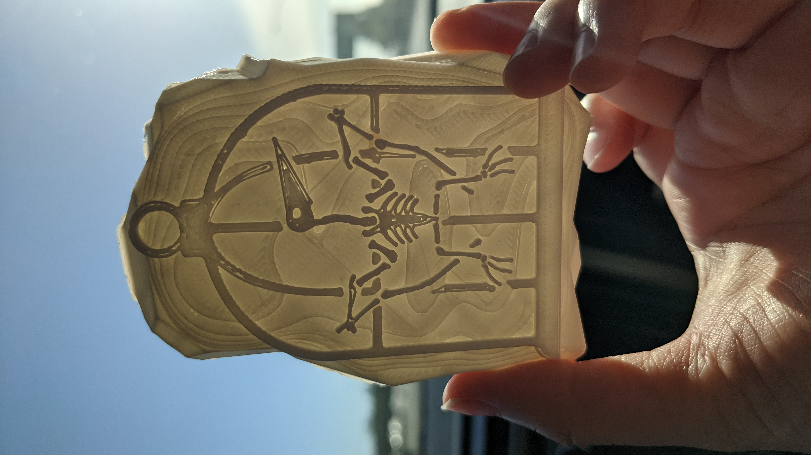

Artifact: Fusion 360, Cura LulzBot, Premiere Pro, 1 min 53 sec, 2021.
A fun idea on a speculative world where dinosaurs could exist among us. An artifact was modeled in Fusion 360 and printed with the standard white PLA filament using the Cura LulzBot software.
About sixty-five million years ago, at the end of the Cretaceous Period, Earth saw one of the most dramatic mass extinctions in history, an event that ended the age of dinosaurs, leaving cracks in the ecosystem. Eventually, these were filled by birds and mammals, both of which went on to evolve rapidly. However, what sort of world would dinosaurs live in if they never went extinct? How would they co-exist with humans in today's world? Considering how wolves, wildcats, and birds evolved and became domesticated, it's interesting to think that dinosaurs could have fallen in the same boat.
What if we lived in a world where Pterosaurs existed among us only to become domesticated? Our ancestors had learned to tame these creatures and by the 40's owning a pet Pterosaur became all the rage. That is until the late 60's where these reptiles suddenly grew agitated with their domesticated life and broke loose, wreaking havoc among society. President Nixon placed an executive order to purge all Pterosaurs.
Below are some sketches interpreting domesticated dinosaurs and the soon-to-be 3D printed artifact:
Here are some progress photos the 3D model in Fusion right before the print:
Progress after the 3D printing:



And finally, a "documentary" of the artifact...: